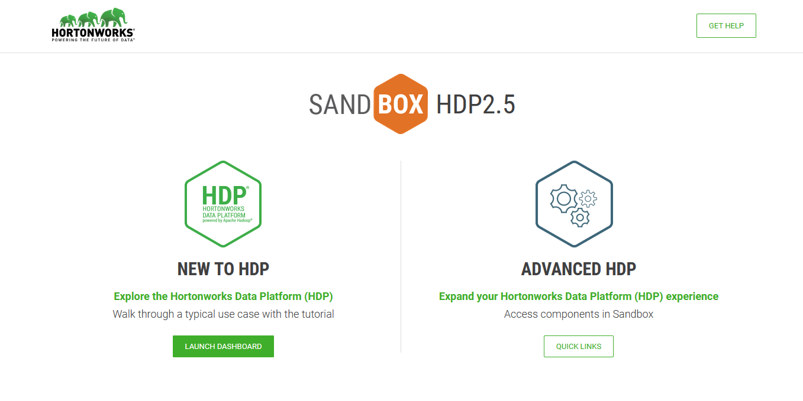
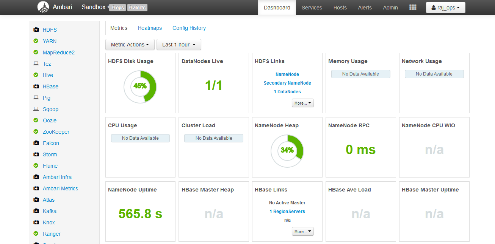
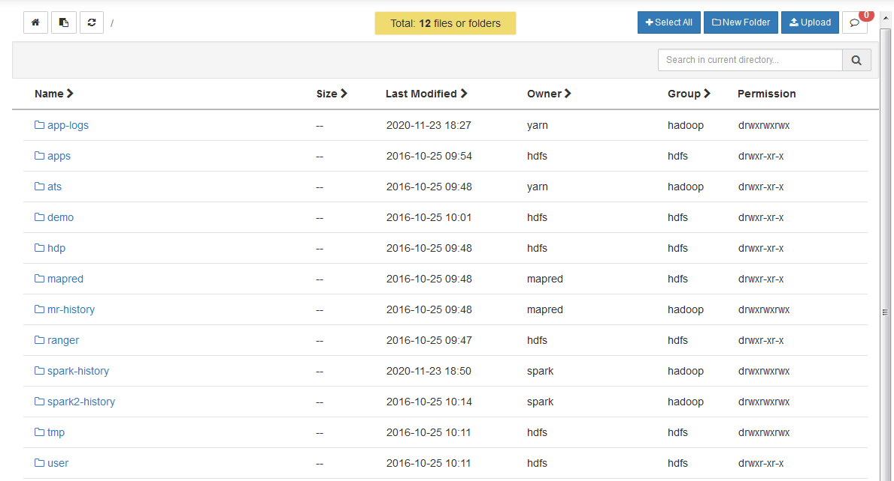
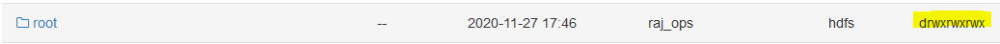
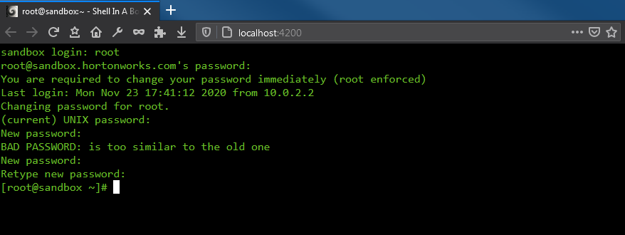
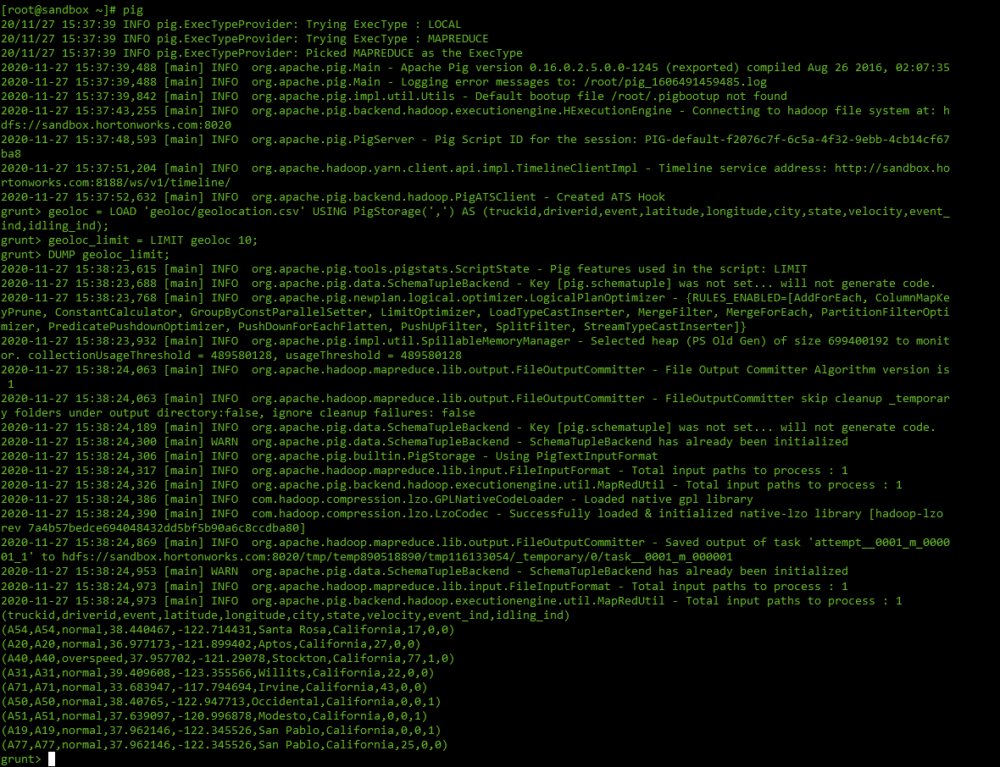
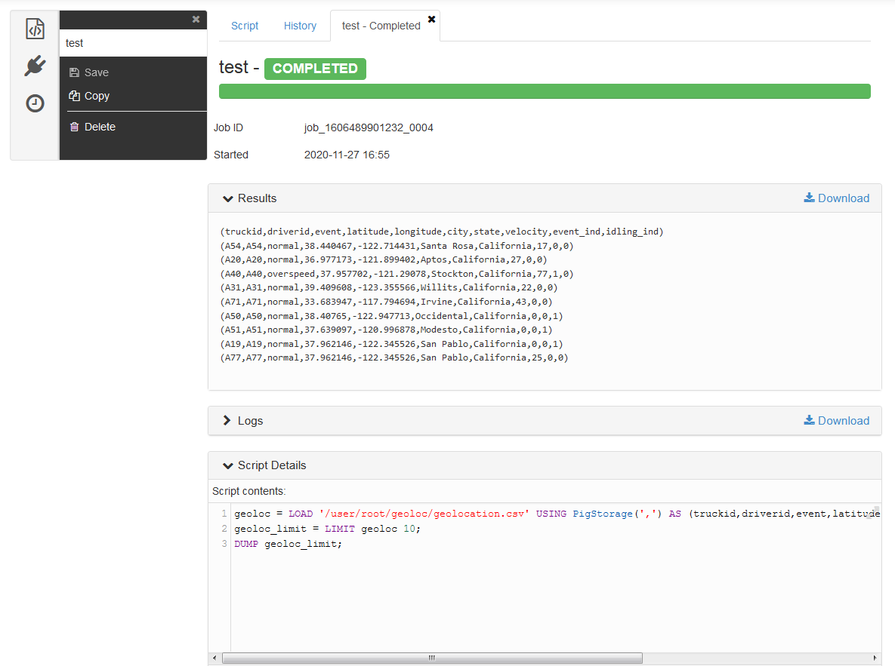
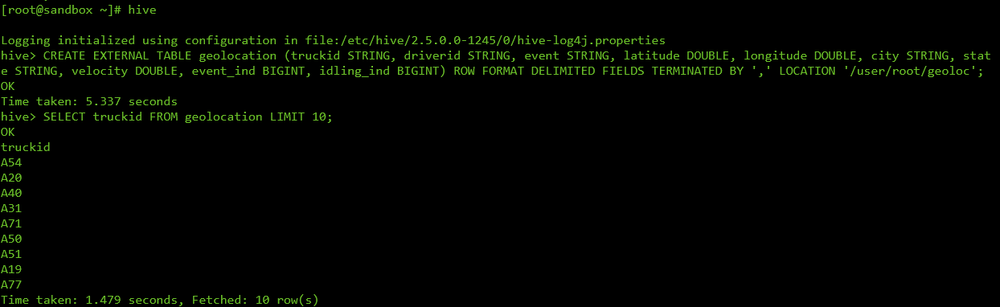
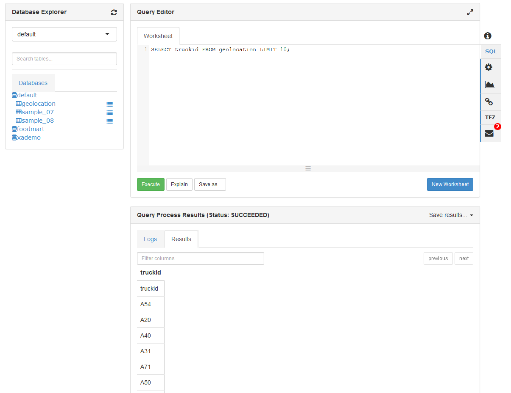
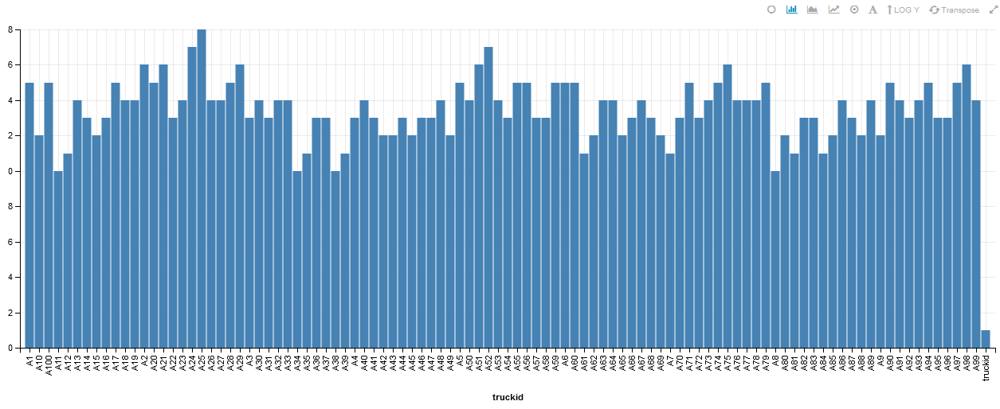

TD1 - First steps in the Hadoop ecosystem
For this tutorial, we are going to focus on managing our cluster through Ambari and playing with some Hadoop features.
Objectives
- Get used to the Ambari interface
- Upload data into HDFS - Hadoop Distributed File System
- Run MapReduce jobs on data in HDFS
- Run Pig jobs on data in HDFS
- Run Hive jobs on data in HDFS
1. Browsing the Ambari interface
- Open a web browser to http://localhost:8888 to be greeted with the Hortonworks Data Platform dashboard. Click on
Launch Dashboardin the left column to pop-up a new browser to Ambari. You can also go to http://localhost:8080 directly.

- Enter the credentials: raj_ops/raj_ops. You will arrive on the Ambari dashboard, your cockpit into the Hadoop platform.

Browsing the Ambari dashboard
- In the left sidebar, you should recognize some of the Hadoop services presented in the lecture.
- The main area displays KPIs to monitor the platform. Apart from Supervisors Live, there should not have too many red flags.
- The topbar has a few links to running services, list of hosts and an admin portal.
- Some links go to
http://sandbox.hortonworks.com, replace that byhttp://localhostif you want to check them out.
Browse the dashboard to answer the following:
Questions on the Ambari dashboard
- How many Namenodes/Datanodes are currently running in the virtual machine ?
- What is the jdbc URL to connect to the Hive server ?
- The YARN cluster comprises of a Resource Manager and a Node Manager. How do you restart all Node Managers ?
2. Uploading files to HDFS
There are two ways to upload data to HDFS: from the Ambari Files View and from a terminal.
In this section we will:
- Upload the
datafolder of the project (which you can find here) into HDFS through the Ambari Files View - Move folders, then upload the titanic.csv file in HDFS with the command line.
Using the Ambari Files View
Question
Find the Ambari Files View.

- Create a new folder
rootinside/user. - Change the permissions of the folder
/user/rootto addgroupandotherwrite/execute permissions. This will prove necessary so therootuser can actually access its own folder from the command-line.

- Enter the
/user/rootfolder, create a newdatafolder and uploadgeolocation.csvandtrucks.csvinside. You should have/user/root/data/geolocation.csvanduser/root/data/trucks.csvby the end.
We now have data in HDFS!
- geolocation.csv – This is the collected geolocation data from the trucks. It contains records showing truck location, date, time, type of event, speed, etc.
- trucks.csv – This is data was exported from a relational database and it shows information on truck models, driverid, truckid, and aggregated mileage info.
But what does it mean? You have to imagine the Hadoop Data Platform is actually a remote cluster of machines, so when you upload a big file in HDFS it gets cut into blocks of 64MB and spread accross multiple DataNodes, and the NameNode keeps a reference for this file in HDFS to all blocks in the cluster.
Info
- The URL
/user/root/data/geolocation.csvin Ambari Views is actuallyhdfs:///user/root/data/geolocation.csv. Thehdfs:///specifies to look into the HDFS cluster instead of locally when using a HDFS client. hdfs:///is a shortcut forhdfs://<host>:<port>/so you won't need to specifyhdfs://sandbox.hortonworks.com:8020/every time.
Recap:
- we have uploaded data into HDFS, in the
/user/rootfolder.
Using the Command-line
In this section, we will use the command-line to check that HDFS indeed has our data files in /user/root, then we will upload the titanic.csv.
Tip
 Don't be discouraged by the command-line. It is one of the best ways to interact with remote systems, enabling scripting and copy-pasting commands!
Don't be discouraged by the command-line. It is one of the best ways to interact with remote systems, enabling scripting and copy-pasting commands!
I recommend taking advantage of this session to follow the Directly ssh into the machine section, and download and try PuTTY on Windows, or use the terminal on Mac/Linux, to connect to remote machines like this virtual machine. This experience is especially helpful in enterprise when you need to run commands on remote machines.
Directly ssh into the machine-
- On Windows, use an ssh client like PuTTy, then SSH into localhost on port 2222. Credentials are root/hadoop.

- You can also, especially on Mac/Linux machines, open a terminal and directly ssh into the virtual machine with
ssh -p 2222 root@localhost.
Using the integrated browser-based shell-
- You can connect to a shell in the Virtual machine with your browser in http://localhost:4200. Credentials are root/hadoop.

Note
In both cases you will be asked to change your root password. Type the current password again then change to a long password. Just remember it for future sessions  .
.
Moving the data folder to geoloc
Now that you are connected to your virtual machine:
- You can access the
hdfscommand from the terminal. This should output the help from the command line. - Display the version of HDFS with
hdfs version.
Output
ssh -p 2222 root@localhost
Could not create directory '/home/.../.ssh'.
The authenticity of host '[localhost]:2222 ([127.0.0.1]:2222)' can't be established.
Are you sure you want to continue connecting (yes/no)? yes
Failed to add the host to the list of known hosts (/home/.../.ssh/known_hosts).
root@localhost's password:
Last login: Sun Nov 29 13:19:19 2020 from 10.0.2.2
[root@sandbox ~]# hdfs
Usage: hdfs [--config confdir] [--loglevel loglevel] COMMAND
where COMMAND is one of:
dfs run a filesystem command on the file systems supported in Hadoop.
classpath prints the classpath
namenode -format format the DFS filesystem
secondarynamenode run the DFS secondary namenode
namenode run the DFS namenode
journalnode run the DFS journalnode
zkfc run the ZK Failover Controller daemon
datanode run a DFS datanode
dfsadmin run a DFS admin client
envvars display computed Hadoop environment variables
haadmin run a DFS HA admin client
fsck run a DFS filesystem checking utility
balancer run a cluster balancing utility
jmxget get JMX exported values from NameNode or DataNode.
mover run a utility to move block replicas across
storage types
oiv apply the offline fsimage viewer to an fsimage
oiv_legacy apply the offline fsimage viewer to an legacy fsimage
oev apply the offline edits viewer to an edits file
fetchdt fetch a delegation token from the NameNode
getconf get config values from configuration
groups get the groups which users belong to
snapshotDiff diff two snapshots of a directory or diff the
current directory contents with a snapshot
lsSnapshottableDir list all snapshottable dirs owned by the current user
Use -help to see options
portmap run a portmap service
nfs3 run an NFS version 3 gateway
cacheadmin configure the HDFS cache
crypto configure HDFS encryption zones
storagepolicies list/get/set block storage policies
version print the version
Most commands print help when invoked w/o parameters.
[root@sandbox ~]# hdfs version
Hadoop 2.7.3.2.5.0.0-1245
Subversion git@github.com:hortonworks/hadoop.git -r cb6e514b14fb60e9995e5ad9543315cd404b4e59
Compiled by jenkins on 2016-08-26T00:55Z
Compiled with protoc 2.5.0
From source with checksum eba8ae32a1d8bb736a829d9dc18dddc2
This command was run using /usr/hdp/2.5.0.0-1245/hadoop/hadoop-common-2.7.3.2.5.0.0-1245.jar
Tip
The hdfs dfs command gives you access to all commands to interact with files in HDFS. Then hdfs dfs <command> -h gives you the command manual.
-
List all folders inside HDFS with
hdfs dfs -ls.- The command
hdfs dfs -lswill take you tohdfs:///user/root.hdfsuses your UNIX username to go to the HDFS home location. Since you're connected usingrootin the Virtual Machine, it connects by default tohdfs:///user/root.
- The command
-
Rename the
hdfs:///user/root/datafolder tohdfs:///user/root/geolocwithhdfs dfs -mv.- Remember by default that
hdfs dfs -mv data geolocis equivalent tohdfs dfs -mv hdfs:///user/root/data hdfs:///user/root/geoloc.
- Remember by default that
Download the Titanic dataset into HDFS
- Use the
wgetcommand to download the Titanic dataset in the filesystem of your virtual machine. - Verify the file is present with
lsand correct withhead -n 5 titanic.csv.
Output
[root@sandbox ~]# wget https://raw.githubusercontent.com/andfanilo/hdp-tutorial/main/data/titanic.csv
--2020-11-29 14:13:59-- https://raw.githubusercontent.com/andfanilo/hdp-tutorial/main/data/titanic.csv
Resolving raw.githubusercontent.com... 151.101.120.133
Connecting to raw.githubusercontent.com|151.101.120.133|:443... connected.
HTTP request sent, awaiting response... 200 OK
Length: 60303 (59K) [text/plain]
Saving to: "titanic.csv"
100%[==============================================================================================================================>] 60,303 --.-K/s in 0.008s
2020-11-29 14:13:59 (6.98 MB/s) - "titanic.csv" saved [60303/60303]
[root@sandbox ~]# ls
anaconda-ks.cfg blueprint.json build.out hdp install.log install.log.syslog sandbox.info start_ambari.sh start_hbase.sh titanic.csv
[root@sandbox ~]# head -5 titanic.csv
PassengerId,Survived,Pclass,Name,Sex,Age,SibSp,Parch,Ticket,Fare,Cabin,Embarked
1,0,3,"Braund, Mr. Owen Harris",male,22,1,0,A/5 21171,7.25,,S
2,1,1,"Cumings, Mrs. John Bradley (Florence Briggs Thayer)",female,38,1,0,PC 17599,71.2833,C85,C
3,1,3,"Heikkinen, Miss. Laina",female,26,0,0,STON/O2. 3101282,7.925,,S
4,1,1,"Futrelle, Mrs. Jacques Heath (Lily May Peel)",female,35,1,0,113803,53.1,C123,S
To copy files from your local machine to HDFS, there is hdfs dfs -copyFromLocal <local_file> <path_in_HDFS>.
- Build the
/user/root/testHDFS folder withhdfs dfs mkdir <path_to_folder>. - Copy
titanic.csvfile from the local VM into the/user/root/testHDFS folder.
Changing permissions for hdfs:///tmp
- Currently, the
hdfs:///tmpfolder doesn't have permissions for everyone to write in. In the Hadoop ecosystem,rootis not the superuser buthdfsis. So we need to be in thehdfsuser before running set permissions. Run the following script.
sudo su -
su hdfs
hdfs dfs -chmod -R 777 /tmp
Don't forget to exit to go back to the root user.
Recap
- In
hdfs:///user/root/, we have moved the contents of thedatafolder intogeoloc - We downloaded
titanic.csvdataset into the virtual machine, then sent it to HDFS inhdfs:///user/root/test. - We changed permissions for
hdfs:///tmp.
Output
[root@sandbox ~]# hdfs dfs -ls /user/root/geoloc
Found 2 items
-rw-r--r-- 3 raj_ops hdfs 526677 2020-11-23 17:56 /user/root/geoloc/geolocation.csv
-rw-r--r-- 3 raj_ops hdfs 61378 2020-11-23 17:56 /user/root/geoloc/trucks.csv
[root@sandbox ~]# hdfs dfs -ls /user/root/test
Found 1 items
-rw-r--r-- 1 root hdfs 60301 2020-11-24 14:59 /user/root/test/titanic.csv
[root@sandbox ~]# hdfs dfs -ls /tmp
Found 6 items
drwxrwxrwx - raj_ops hdfs 0 2020-11-27 16:10 /tmp/.pigjobs
drwxrwxrwx - raj_ops hdfs 0 2020-11-27 16:09 /tmp/.pigscripts
drwxrwxrwx - raj_ops hdfs 0 2020-11-27 16:09 /tmp/.pigstore
drwxrwxrwx - hdfs hdfs 0 2016-10-25 07:48 /tmp/entity-file-history
drwxrwxrwx - ambari-qa hdfs 0 2020-11-27 16:46 /tmp/hive
drwx------ - root hdfs 0 2020-11-27 15:38 /tmp/temp890518890
Going back to our objectives
- Get used to the Ambari interface
- Upload data into HDFS - Hadoop Distributed File System
- Run MapReduce jobs on data in HDFS
- Run Pig jobs on data in HDFS
- Run Hive jobs on data in HDFS
3. Running a MapReduce job
Time to compute stuff on data in HDFS. You should be using a command-line as the root user.
Compute a distributed Pi
- Run the Pi example :
yarn jar /usr/hdp/current/hadoop-mapreduce-client/hadoop-mapreduce-examples.jar pi 4 100.- You can check all your jobs in the Resource Manager UI, from Ambari.
Question
Make the Pi calculation a bit more precise. Looking at the help of the function below, what would be nMaps? nSamples?
[root@sandbox ~] yarn jar /usr/hdp/current/hadoop-mapreduce-client/hadoop-mapreduce-examples.jar pi
Usage: org.apache.hadoop.examples.QuasiMonteCarlo <nMaps> <nSamples>
Compute wordcount on files in HDFS
Now we want to run a wordcount on a file inside HDFS, let's run it on files inside hdfs:///user/root/geoloc/.
- Run
yarn jar /usr/hdp/current/hadoop-mapreduce-client/hadoop-mapreduce-examples.jar wordcount geoloc/geolocation.csv output.- The command will not work if
hdfs:///user/root/outputalready exists, in that case remove the folder withhdfs dfs -rm -r -f output.
- The command will not work if
- Examine the
hdfs:///user/root/outputfolder. You can usehdfs dfs -ls outputandhdfs dfs -cat output/part-r-00000.
Question
Can you explain the part-r-00000 ?
- Only one reducer is working there. You can edit the number of reducers running with the flag
-D mapred.reduce.tasks=10. Edit the previous command to change the number of reducers working and output this in a new folderoutput2.
Question
Examine the output2 folder. Can you note a difference with the previous execution ?
Do you want to know more about the Java MapReduce code in the JAR?
I am not going to have you write Java code to compute MapReduce, but in case you are wondering:
import java.io.IOException;
import java.util.*;
import org.apache.hadoop.fs.Path;
import org.apache.hadoop.conf.*;
import org.apache.hadoop.io.*;
import org.apache.hadoop.mapreduce.*;
import org.apache.hadoop.mapreduce.lib.input.FileInputFormat;
import org.apache.hadoop.mapreduce.lib.input.TextInputFormat;
import org.apache.hadoop.mapreduce.lib.output.FileOutputFormat;
import org.apache.hadoop.mapreduce.lib.output.TextOutputFormat;
public class WordCount {
public static class Map extends Mapper<LongWritable, Text, Text, IntWritable> {
private final static IntWritable one = new IntWritable(1);
private Text word = new Text();
public void map(LongWritable key, Text value, Context context) throws IOException, InterruptedException {
String line = value.toString();
StringTokenizer tokenizer = new StringTokenizer(line);
while (tokenizer.hasMoreTokens()) {
word.set(tokenizer.nextToken());
context.write(word, one);
}
}
}
public static class Reduce extends Reducer<Text, IntWritable, Text, IntWritable> {
public void reduce(Text key, Iterator<IntWritable> values, Context context)
throws IOException, InterruptedException {
int sum = 0;
while (values.hasNext()) {
sum += values.next().get();
}
context.write(key, new IntWritable(sum));
}
}
public static void main(String[] args) throws Exception {
Configuration conf = new Configuration();
Job job = new Job(conf, "wordcount");
job.setOutputKeyClass(Text.class);
job.setOutputValueClass(IntWritable.class);
job.setMapperClass(Map.class);
job.setReducerClass(Reduce.class);
job.setInputFormatClass(TextInputFormat.class);
job.setOutputFormatClass(TextOutputFormat.class);
FileInputFormat.addInputPath(job, new Path(args[0]));
FileOutputFormat.setOutputPath(job, new Path(args[1]));
job.waitForCompletion(true);
}
}
4. Running Pig jobs
If you take a look at the Java code for Wordcount, as BI Analysts / Data Scientists you are probably not going to want to write those. In this section we look into Pig, a higher-level tool which converts Pig Latin scripts into MapReduce scripts.
There are two ways to start a Pig session here:
- Interactively through the Terminal/Command-line, by launching a Pig shell with
pigand running commands one by one. - There's a dedicated Pig View in Ambari. This should be the preferred method if you want to run full scripts but is much longer to run than the Pig shell. Sometimes it errors with an exception from Jetty, don't hesitate to close and come back to the View to reinitialize.
For this section, we focus on using Pig to analyze the geolocation dataset.
- Run the following script/commands to load the file into a variable, then display the first ten lines from the geolocation file:
geoloc = LOAD '/user/root/geoloc/geolocation.csv' USING PigStorage(',') AS (truckid,driverid,event,latitude,longitude,city,state,velocity,event_ind,idling_ind);
geoloc_limit = LIMIT geoloc 10;
DUMP geoloc_limit;


- Let's try to compute some stats on this file.
geoloc = LOAD '/user/root/geoloc/geolocation.csv' USING PigStorage(',') AS (truckid:chararray, driverid:chararray, event:chararray, latitude:double, longitude:double, city:chararray, state:chararray, velocity:double, event_ind:long, idling_ind:long);
truck_ids = GROUP geoloc BY truckid;
result = FOREACH truck_ids GENERATE group AS truckid, COUNT(geoloc) as count;
STORE result INTO '/tmp/results';
DUMP result;
Question
- Check the
hdfs:///tmp/resultsfolder stored in HDFS by theSTOREline. What can you say compared to the MapReduce wordcount ? - Count the list of distinct cities visited per truckid
- Compute the mean velocity per truckid
You may still find legacy Pig jobs in the nature, but you should not be required to write new Pig scripts anymore.
5. Running SQL jobs with Hive
We as analysts are much more used to using SQL to process our data. The role of datawarehouse package in the Hadoop ecosystem goes to Hive.
Note
In today's world, SQL skills are still very important and one of the primary languages to manipulate data. So always work on your SQL.
Like for Pig:
- you can start a Hive shell from your terminal/command-line, with the
hivecommand. This is dedicated to simple SQL queries or operational management. - There's a dedicated Hive View in Ambari, with some visualization capabilities.
Time to create a table to analyze the geolocations again!
- Move the
trucks.csvfile outside of thehdfs:///user/root/geolocfolder tohdfs:///user/root/trucks. - Create an external table for the
hdfs:///user/root/geolocfolder which containsgeolocation.csv.
CREATE EXTERNAL TABLE geolocation (truckid STRING, driverid STRING, event STRING, latitude DOUBLE, longitude DOUBLE, city STRING, state STRING, velocity DOUBLE, event_ind BIGINT, idling_ind BIGINT)
ROW FORMAT DELIMITED
FIELDS TERMINATED BY ','
LOCATION '/user/root/geoloc';
- Visualize the first rows of the table
SELECT truckid FROM geolocation LIMIT 10;


Note
- The way Hive works is every file inside the
geolocfolder is read by Hive as data in the table. This is why we had to move out thetrucks.csvfile. - The following command creates a Hive table pointing to a HDFS location. You can drop it, it won't destroy the data in HDFS
Question
- Are you again able to count the list of distinct cities visited per truckid, and mean velocity per truckid ?
- On the Ambari View, count the number of distinct cities per trucks and display it on a bar chart.

Conclusion
 We have seen the first Hadoop libraries, and we are now able to store raw data in HDFS, then process it with Pig or Hive.
We have seen the first Hadoop libraries, and we are now able to store raw data in HDFS, then process it with Pig or Hive.
Going back to our objectives
- Get used to the Ambari interface
- Upload data into HDFS - Hadoop Distributed File System
- Run MapReduce jobs on data in HDFS
- Run Pig jobs on data in HDFS
- Run Hive jobs on data in HDFS
In the next tutorial, we will build our own ETL-like solution in Big Data. We will have a look at ingesting unstructured data live to HDFS, extracting and structuring the important information into a Hive table, and build simple graphs.